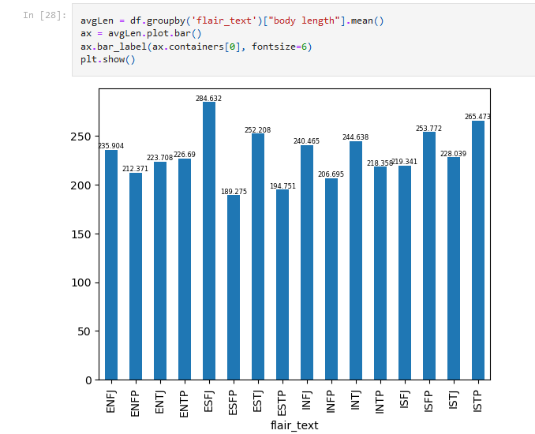
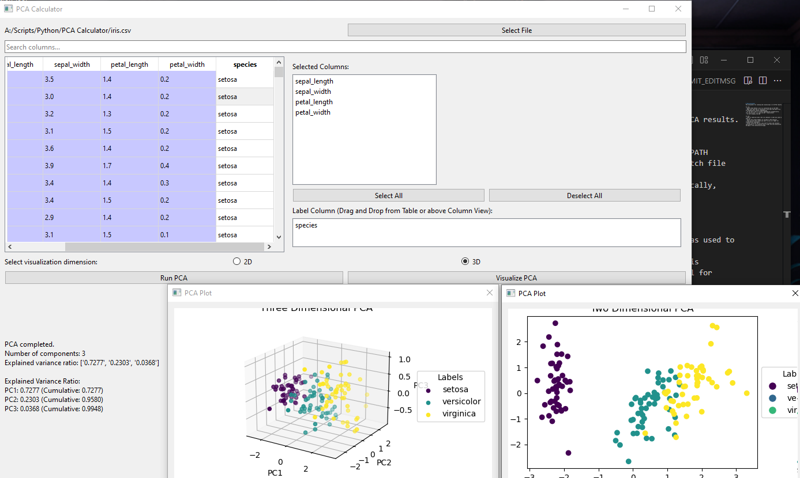

Overview
This is just a small sampling of open source projects that I've worked on either in my spare time or motivated to make certain aspects of my job more efficient and productive.
Python Projects
MBTI Classifier
A series of Jupyter Notebooks going through the process of data cleansing and data modeling. The final model is available for download and deployment to an inference endpoint either from the link below or from the Github link.
 View on GitHub View on HuggingFacePCA Calculator
This was a PCA calculator that I originally designed in 2019 using Tkinter for both educational purposes to teach students without a strong mathematical background about principal component analysis. I refactored this over the course of ~2 days to take advantage of the much better PyQt6.
I plan on adding some CPython to this in the future to make it able to handle larger files as well as adding the ability to perform K-means on truly unsupervised data. For now, it's a useful teaching tool or a fun toy for smaller datasets (tested it for up to ~10MB CSV files and it does work, albeit with a little lag).
 View on GitHubXML/JSON Parser
This project was originally written in Python in a messy jumble when I was just first starting out as a data analyst. It was a lot more featureless and relied on the Python interpreter. There was a flattener component that I still use today but I rewrote the whole thing in C# to let it run as an executable without having to rely on the Python executable compilers.
A lightweight version with just the parsing feature is available below written in Javascript. The executable and instructions how to compile it for non-Windows machines is also available. Check it out!
 View on GitHub
View on GitHub
XML Tree Viewer
This, along with the JSON viewer, was born from my increasing frustration with existing online visualizers. While extremely useful in many cases, the clutter was something that was a bit much, especially since as a data engineer, I would need to parse through semi-structured documents regularly. In addition, this way I know that it's completely spyware free!
Try it out:
View Source CodeJSON Tree Viewer
This, along with the XML viewer, was born from my increasing frustration with existing online visualizers. While extremely useful in many cases, the clutter was something that was a bit much, especially since as a data engineer, I would need to parse through semi-structured documents regularly. In addition, this way I know that it's completely spyware free!